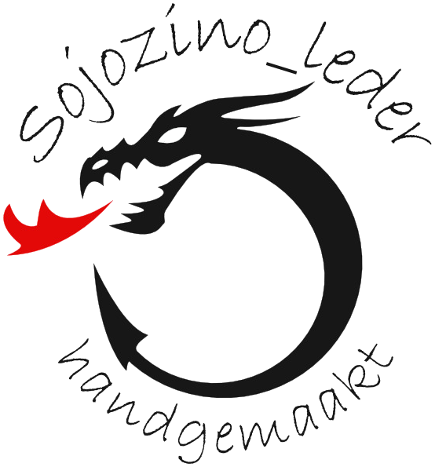
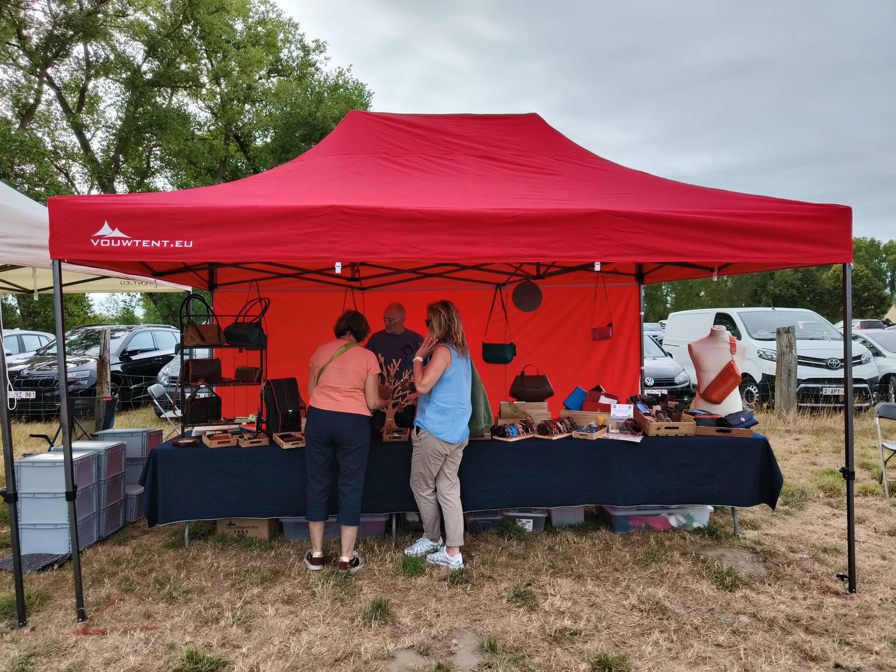

Handgemaakt leder — Oostende
Unieke handgemaakte lederwaren van Sojozino: handtassen, rugzakken, riemen en kleine lederwaren — elk stuk met zijn eigen karakter.
Over het atelier
Sojozino is het lederatelier van Johnny Decoopman uit Oostende. Zijn passie voor lederbewerking begon in 2018 en groeide uit tot een atelier waar hij met veel liefde kleine lederwaren, riemen, tassen en rugzakken vervaardigt.
Uitgelicht

Kom langs
Regelmatig staat Johnny op ambachtenmarkten, onder een opvallende rode tent.